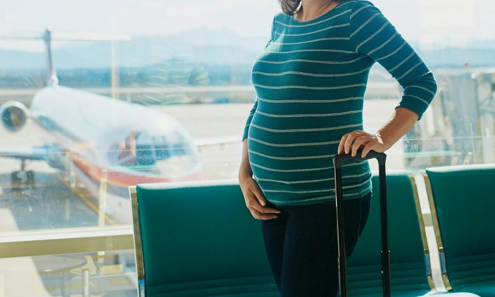

Meski diperbolehkan melakukan liburan saat hamil menggunakan pesawat, ibu juga perlu mengetahui risiko yang mungkin saja terjadi saat ketika naik pesawat saat hamil. Jika sudah mendapat persetujuan dari dokter untuk melakukan perjalanan dengan pesawat, dan kondisi telah memenuhi kebijakan yang ditetapkan dari maskapai penerbangan, maka ibu dapat melakukan beberapa tips berikut :
- Memasang sabuk pengaman dengan posisi tali berada di bawah perut, agar tidak tertekan.
- Pesan tiket dengan tempat duduk di sebelah lorong, agar ibu dapat leluasa bergerak.
- Konsumsi banyak air putih guna mencegah dehidrasi.
- Kenakan pakaian yang longgar dan nyaman saat bepergian.
- Sesekali berjalan di lorong pesawat, agar peredaran darah dalam tubuh tetap lancar.
- Jika merasa sesak napas saat pesawat mencapai ketinggian tertentu, segera gunakan masker oksigen yang disediakan.